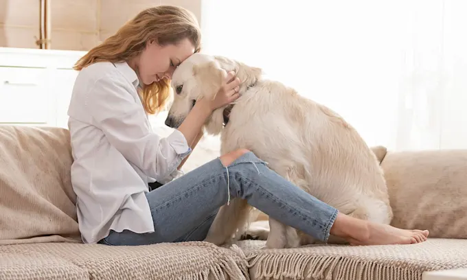
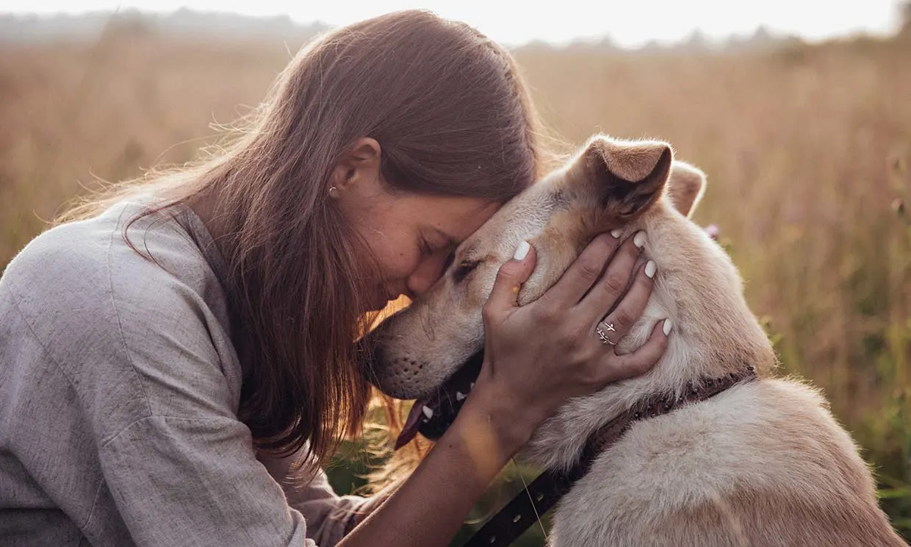

Tener un nuevo integrante peludo en la familia significa nuevas responsabilidades y cuidados sobre él. Los perros son las mascotas más cariñosas y siempre están dispuestos a acompañarnos, por lo que siempre vamos a querer tener los mejores cuidados con ellos. Verlos sanos y felices es nuestro objetivo, y por eso, aquí te damos 10 consejos útiles para el cuidado óptimo de tus perritos.
1. No dejes solo a tu perro
Intenta que tu perro no se quede solo durante mucho tiempo porque podría estresarse, aburrirse y esto lleva a que haga travesuras o destroce cosas. Si no tienes otra opción que dejarlo solo en casa, trata de que no sea por demasiado tiempo. Busca alternativas, como que se quede con alguna persona de confianza o alguien que te ayude a pasearlo por unas horas. Siempre trata de encontrar una solución que beneficie al bienestar de tu mascota. Nunca olvides prestar la atención necesaria a tu mascota, y darle el cariño y respeto que se merece. Cada perrito es único, por lo que cada uno tiene necesidades particulares y gustos específicos. Cuidar de ellos es una gran responsabilidad, pero harías lo que sea por tus pequeños mejores amigos.
2. Educa a tu mascota

Las mascotas necesitan direccionamiento para un buen comportamiento, tanto en el hogar como fuera de él. Considera inscribir a tu perro en una clase para desarrollar su buena conducta y para que aprenda habilidades sociales con otras personas y perros. Además, es bueno que dediques un tiempo todos los días a tu mascota para que le enseñes comandos básicos de obediencia.
3. Consiéntelo con juguetes

¿Quieres que tu perro sea más feliz? Un juguete siempre será una buena opción. Ofrecerle un juguete a tu perro ayudará a que se divierta, saque toda su energía y libere estrés. Además, te beneficiará porque así evitas que destruya tus cosas. ¿Quieres estimularlo mentalmente? Regálale juguetes que lo reten, por ejemplo, aquellos que le dispensan golosinas. Esto ayudará a que tu mascota experimente sensaciones y emociones positivas al ganar su premio.
4. Demuéstrale todo tu amor
Lo que más necesitan tus mascotas es amor y atención. Dedícales tiempo para jugar, mimarlos y demostrarles el cariño que les tienes. Ellos te agradecerán por tus atenciones, que los hagas sentir en familia, por darles alimento y un lugar cómodo para descansar; esto crea un vínculo emocional que perdurará el resto de su vida
5. Ejercicios para tu perro

Los perros necesitan ejercicios para quemar energía y mantenerse saludables. Es importante que tu perro pueda salir de casa al menos dos veces al día y realice conductas propias de su especie animal, como explorar el espacio, seguir rastros, olfativos, correr y socializar con otros perros. De este modo, no solo fortaleces la relación con tu mascota, sino que lo mantienes estimulado y activo.
6. Mantener la higiene de tu mascota

La higiene de tu mascota es algo tan sencillo como primordial, que contribuye a conservar su salud y a prevenir cualquier tipo de enfermedad. Con bañarlo, cepillarlo, un corte periódico de su pelaje y mantener su ambiente limpio, lo libras de suciedad, bacterias y otros peligros. Tu mascota se verá siempre limpia, bien cuidada y de seguro te lo agradecerá
7. La esterilización de tu perro

La esterilización es un proceso que dependerá de varios factores: la edad, sexo, tamaño, peso y estado de salud de tu mascota. Normalmente es recomendado que sea esterilizado entre los 6 y 12 meses, pero habrá veterinarios que te recomienden esperar hasta que tu perro alcance la madurez sexual. La esterilización de tu mascota puede traer grandes beneficios, como la reducción de riesgo de enfermedades y cambios positivos en su comportamiento. Si tienes una hembra, puedes prevenir enfermedades como: el cáncer de mama, útero y ovario. Si tienes un perro macho, la esterilización previene el riesgo de cáncer de próstata, tumores y otras infecciones.
8. Mantén siempre vacunado a tu perro

Es necesario que tus mascotas tengan un control de chequeo regular con un veterinario, ya que requieren ser desparasitados y recibir sus vacunas periódicas. Para ello, hay que seguir las recomendaciones que dicte el veterinario con el calendario de vacunación. Las vacunas permiten que tus mascotas se protejan de una variedad de enfermedades y se mantengan saludables. Aunque tu mascota no tenga síntomas de alguna enfermedad, es importante que visite al veterinario, por lo menos, 3 veces al año.
9. La importancia del uso de collar y correa
Aunque ya lo sabes, el uso del collar y correa es muy importante para el cuidado de tus mascotas. Cuando sacas a pasear a tu perro, siempre debes hacerlo con una correa para evitar que se escape o evitar que se acerque demasiado a otras personas o perros. Mientras que el collar ayuda a que el perrito pueda ser identificado, gracias a la placa que debe venir con él y es importante que incluya los siguientes datos: su nombre y tu número de celular.
10. La alimentación adecuada para tus perros

La nutrición es una parte importante para el cuidado y atención de tu mascota. Su alimentación debe ser equilibrada y adaptada según su edad, tamaño, actividad física y condiciones de salud, para que así pueda contar con los nutrientes necesarios. Es importante que no lo alimentes con comida cruda, sobras o huesos, porque podría causarle parásitos y enfermedades. Además, no olvides brindarle agua fresca para que se mantenga siempre hidratado. Considera consultar con tu veterinario de confianza el tipo de alimento más adecuado y las porciones precisas; cada mascota es un mundo y no hay una indicación igual para todos.